A learning log from my first two days back in hands-on development — CLI setup, a live local theme, and actually understanding what was happening underneath it.
Why I’m writing this
I stepped away from hands-on development for two and a half years. Coming back, I didn’t want a portfolio built from tutorials I’d copy-pasted my way through — I wanted something that actually proved I could think through a real workflow, mistakes included.
So this is that: an honest log of the first two days of building a custom Shopify theme completely from scratch, using the Shopify CLI instead of a pre-built theme. Not just the commands I ran, but what I misunderstood along the way, and what I went back and actually learned once the commands worked.
I’ve already worked professionally with Shopify — themes, components, the storefront side. What was new here was doing it without a starting theme, and doing it through the command line instead of the admin’s drag-and-drop editor.
Day 1 — Getting the CLI running
My starting point was a fresh dev store, sitting on Shopify’s default theme.
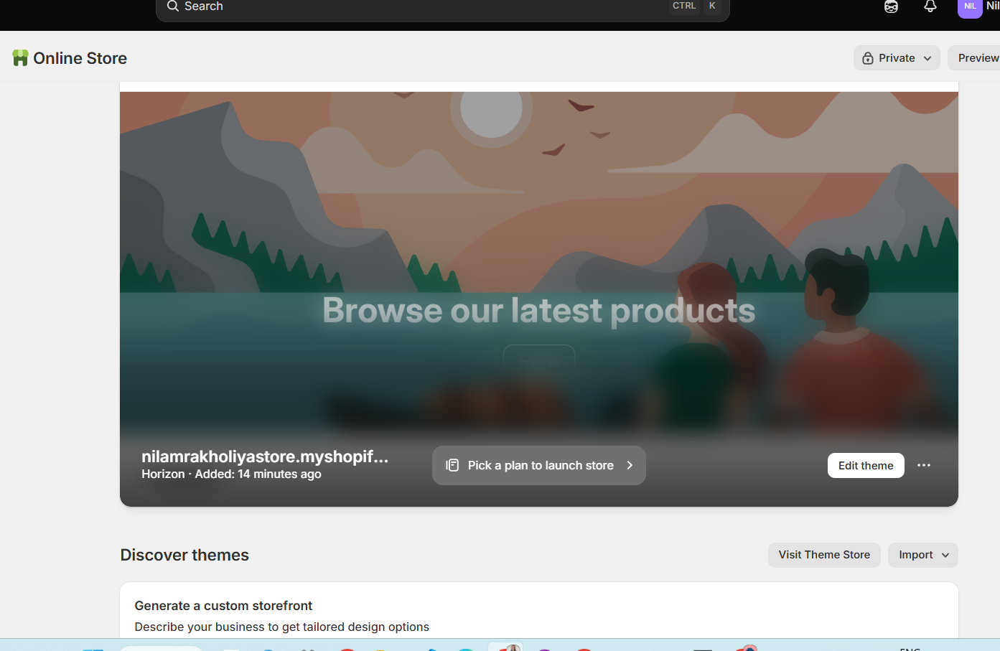
The store as it existed before any of this — default Horizon theme, freshly created.Installing the CLI
The first step was installing the Shopify CLI itself:
npm install -g @shopify/cli @shopify/theme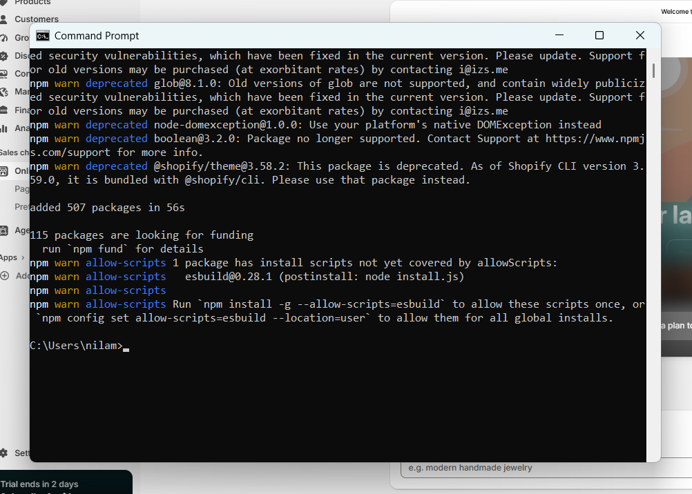
My first reaction to this was “did something break?” It hadn’t.This is the part I’d tell past-me not to panic about. Every line here is a warning, not an error — mostly npm flagging outdated sub-dependencies other packages rely on internally. None of it touches Shopify or blocks the install. The one line worth actually reading was the @shopify/theme deprecation notice: that package is now bundled directly into @shopify/cli, so I technically didn’t need to install it separately — harmless, just redundant.
Authenticating
Next was linking the CLI to my Shopify Partner account:
shopify auth login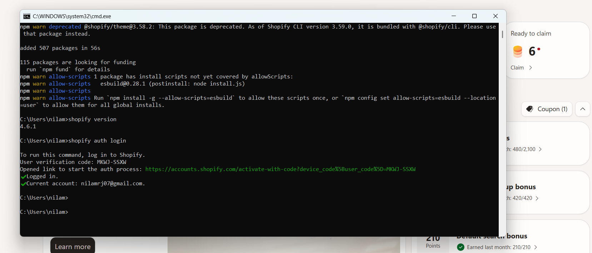
shopify version confirmed the install worked. auth login confirmed I was connected.
This uses something called the OAuth device code flow — the same pattern a smart TV uses when it shows you a short code and asks you to enter it on a separate device. The terminal generated a code, opened a browser tab, and once I approved it there, my terminal received a private token proving it was allowed to act on my account going forward.
One small detour here: I had an old browser tab open from a previous attempt, still asking for a verification code.
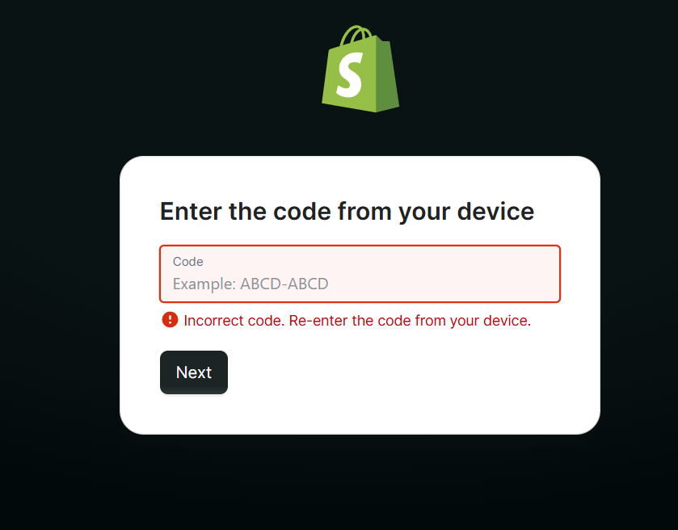
This looked alarming until I realized my terminal had already logged in successfully — this tab was just stale.Worth remembering: once a login succeeds in the terminal, any lingering browser tab from that same flow is irrelevant. Codes expire, and the terminal is the actual source of truth for whether you’re authenticated.
Scaffolding a blank theme
With the CLI authenticated, I generated a theme:
shopify theme init my-custom-theme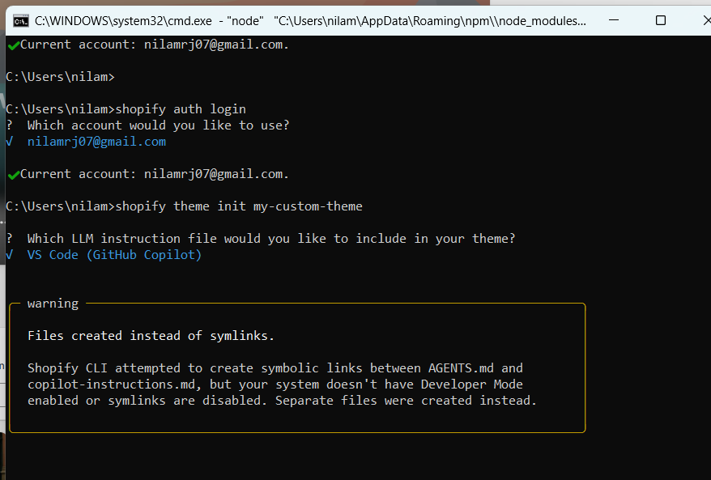
A prompt I hadn’t expected — the CLI offered to generate an AI-assistant instruction file alongside the theme.This pulls Shopify’s official Skeleton theme — a deliberately minimal starting point with the required folder structure but no design baked in. Importantly: nothing about this step touches the actual store. It’s just files landing on my machine. I could have deleted the folder right after and the store would be completely unaffected.
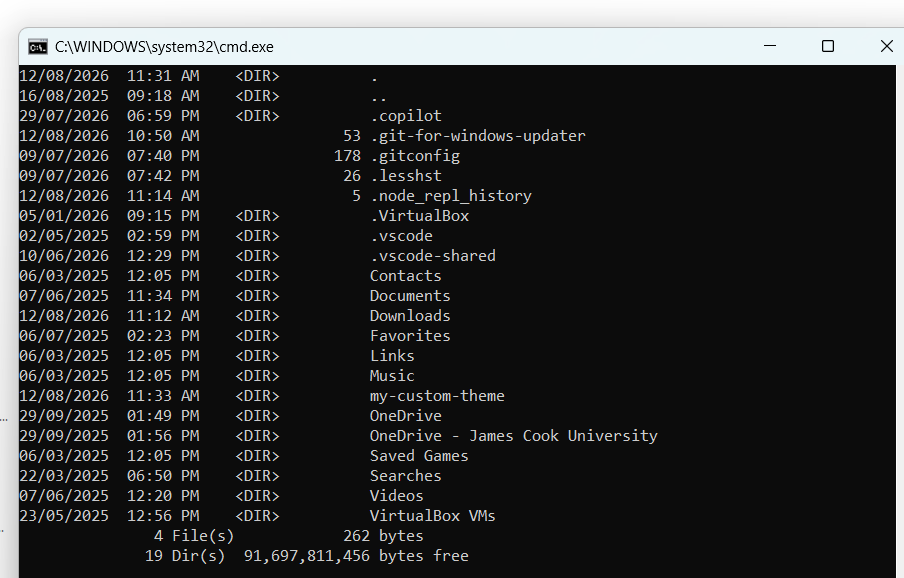
Confirmation the theme folder existed locally.Moving into the folder and listing its contents showed the real structure:
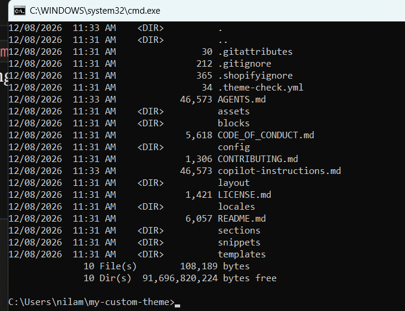
layout, sections, snippets, templates, assets, config — the actual anatomy of a Shopify theme.Each folder has a specific job:
| Folder | Purpose |
|---|---|
layout/ |
The outer HTML shell every page renders inside |
sections/ |
Reusable, configurable blocks — header, footer, hero, etc. |
snippets/ |
Small reusable pieces of code, included into sections |
templates/ |
Defines which sections appear on which page type |
assets/ |
CSS, JS, images |
config/ |
Theme-wide settings definitions |
Running it live
The moment that actually felt real was this:
shopify theme dev --store nilamrakholiyastore.myshopify.com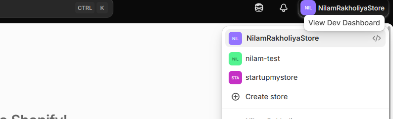
Success — a local dev server, live-linked to my real store.Along the way I got briefly sidetracked looking at the store-switcher dropdown in the Shopify admin, thinking it was part of this flow:
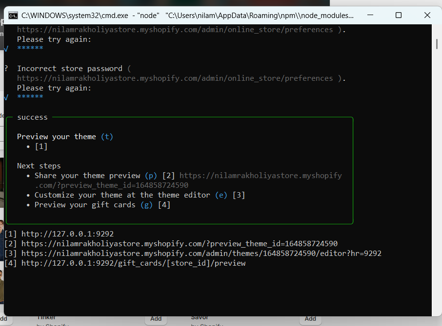
Not related to the CLI at all — just the normal admin UI for switching between Partner-account stores.Back in the terminal, after entering the storefront password (a separate gate dev stores have, unrelated to any of this setup), the preview loaded:
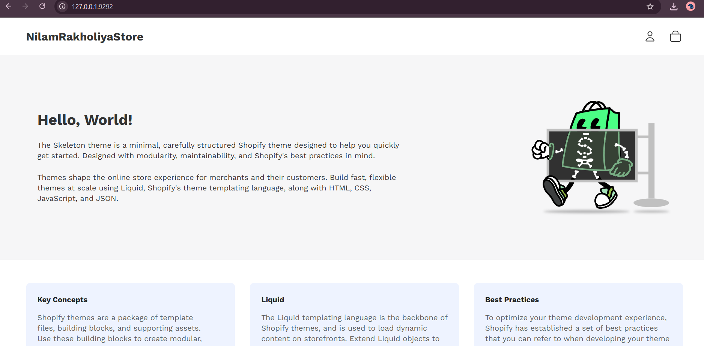
The Skeleton theme’s default homepage — plain, but genuinely mine, running from local code against real store data.End of day one: CLI installed, authenticated, a blank theme scaffolded, and a live local preview working.
Day 2 — Understanding what actually happened
Day one was commands and outputs. Day two, I wanted to understand the mechanics — not just that things worked, but why.
The mental model that made everything click
A Shopify store is a live database — products, pages, settings. A theme is just code that decides how that data gets displayed. They’re stored and managed completely separately.
Everything from day one was really about connecting a second, blank theme to my existing store’s real data — without ever touching the theme actually live for customers.
Revisiting a small confusion
I hit a moment where my theme didn’t show up where I expected it to:
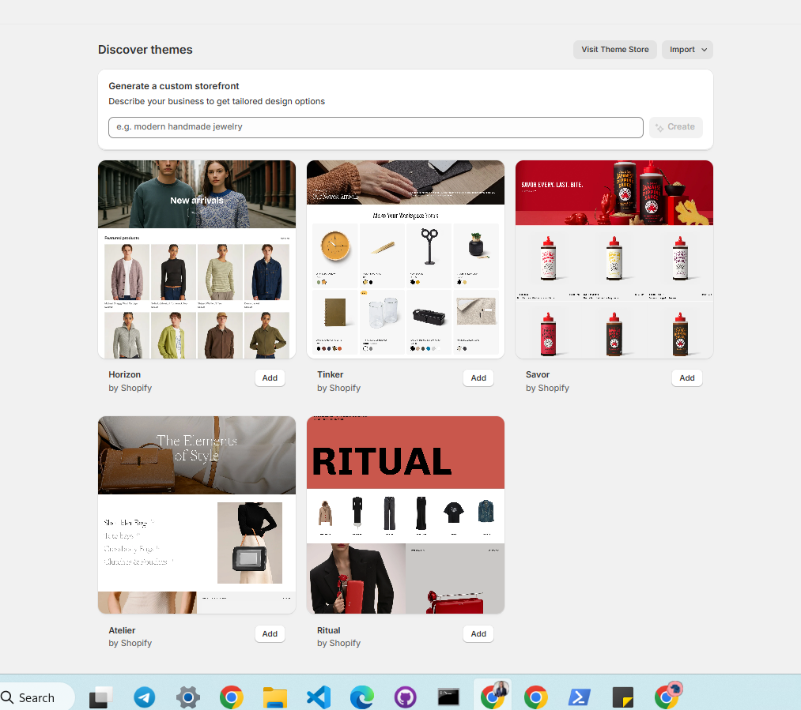
My custom theme wasn’t listed here — briefly confusing.The explanation, once I understood the states a theme can be in (more on this below): shopify theme dev creates a temporary development theme that only exists in the Theme library while that terminal session is running. Close the terminal, and it disappears from view — nothing is lost, it’s simply not the kind of theme meant to persist.
I also hit a small terminal error that turned out to be nothing:
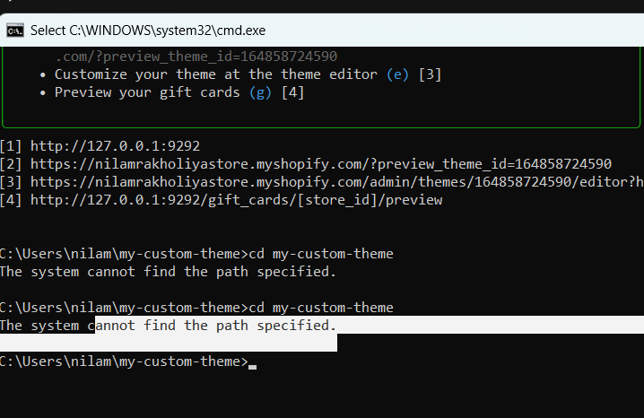
I tried tocd into a folder I was already inside of. An easy mistake, and a good reminder to check the prompt path before typing the next command.
The three states a theme can be in
This is the piece that actually resolved my confusion from the screenshot above:
| State | Persists after closing terminal? | Visible in Theme library? | Customers see it? |
|---|---|---|---|
Development (theme dev) |
No | No | Never |
Unpublished / draft (theme push --unpublished) |
Yes | Yes | Never |
| Live (published) | Yes | Yes | Yes |
Running shopify theme push --unpublished created a permanent draft theme — sitting in my Theme library regardless of whether a terminal is open, fully previewable through Shopify’s visual editor, but still completely invisible to real customers until I explicitly publish it.
What the dev server actually is
The part that had genuinely felt like magic on day one: how a “local” preview could show real store data.
The answer is that shopify theme dev isn’t a copy of the store — it’s a local proxy server. A proxy sits between your request and the real destination, able to modify what passes through. The actual request path looks like this:
browser → local proxy → Shopify's real servers → back through proxy (local code swapped in) → browserMy browser asks for a page. The proxy fetches real data — products, cart state, settings — from Shopify’s actual servers, then swaps in my local files before the response reaches me. Real data, local code, live — no upload step, no delay. Editing a file and refreshing shows the change instantly because the proxy simply re-reads the file on each request.
Code editor vs. visual editor
The last piece worth separating clearly:
- VS Code defines what’s possible. Writing a section’s Liquid file, including its
{% schema %}block, declares what settings exist and what content it can hold. This is code. - Shopify’s visual editor configures those possibilities. It lets me arrange sections and set values — no code touched, just data, stored separately as JSON.
This distinction matters directly for what I’m building next: a mega menu needs code (to render nested menu items as a dropdown panel) and data (the actual nested menu structure, built inside Online Store → Navigation in the admin). Neither piece alone is enough.
Where this leaves me
Two days in, I have:
- A working local development environment, properly authenticated
- A theme scaffolded entirely from scratch — no template, no page builder
- A real understanding of the mechanics: proxy servers, theme states, and the code/data split between VS Code and the visual editor
Next up: building the header and a mega menu, entirely by hand, using everything above.
If you’re coming back to development after a break of your own, the biggest thing that helped wasn’t the commands — it was slowing down enough on day two to ask why each one worked, instead of just moving on once it did.